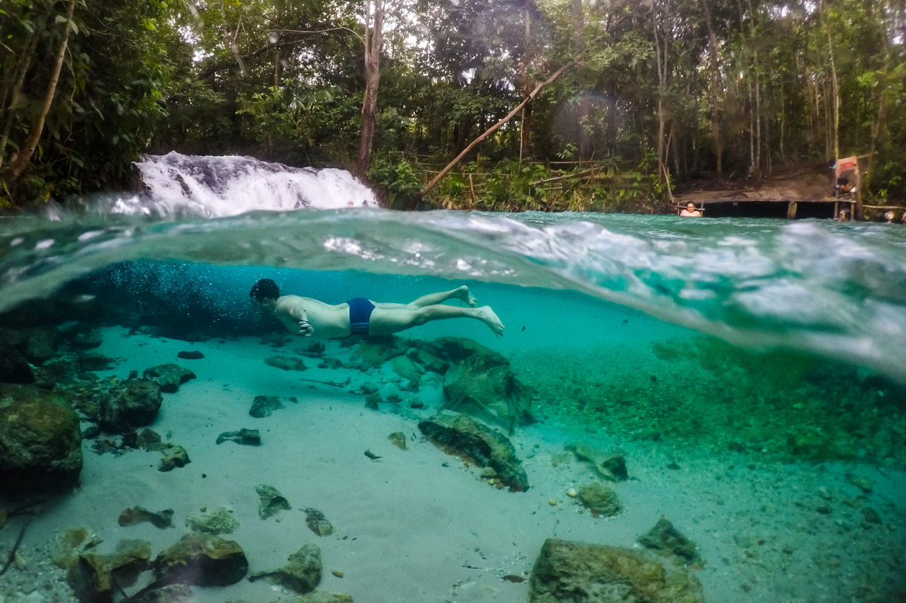

O que fazer no Jalapão:
A região do Jalapão está dando os primeiros os passos para se tornar um
grande destino do ecoturismo no Brasil. Alguns atrativos mais procurados
pelos viajantes sempre estão presentes nos roteiros de quem percorre a
região.
Entre os mais populares pontos turísticos estão as Dunas
do Jalapão, a Cachoeira do Formiga, a Prainha do Rio Novo, a Cachoeira
da Velha e ao menos um dos fervedouros, sendo que o mais tradicional é o
Fervedouro do Ceiça.
O Jalapão ainda está sendo descoberto e a
cada ano surgem novos fervedouros e atrativos. Por isso é bom esperar
por novos roteiros nos próximos anos.
-
Fervedouro do Ceiça
O Fervedouro do Ceiça é um ponto turístico localizado no Jalapão, em Mateiros, Tocantins, Brasil. É conhecido por suas águas cristalinas e quentes, que são formadas a partir de uma fonte subterrânea.
Com suas águas claras e termais, o Fervedouro do Ceiça é um local ideal para banhos e atividades de lazer, como natação e relaxamento. Além disso, é um local de grande importância ecológica, já que a fonte subterrânea que alimenta as águas é uma importante fonte de recursos hídricos para a região -
Dunas do Jalapão
As Dunas do Jalapão no Tocantins é uma atração imperdível para quem faz turismo no Jalapão. Com areia dourada, as dunas surgiram da erosão das rochas e serras da região durante longos anos. Elas também são conhecidas como Deserto do Jalapão, tanto pelo volume de areia, assim como, pela pequena densidade demográfica.
E tem mais: as Dunas do Jalapão são campeãs no critério de cenário de gravações de filmes, novelas e clipes quando pensamos no Parque Estadual do Jalapão. Além de estar, claro, entre os dois lugares favoritos para assistir ao pôr do sol – o outro é a Pedra Furada.
-
Cachoeira do Formiga
O intenso verde esmeralda da água da Cachoeira do Formiga encanta os turistas que visitam o Jalapão. A cachoeira está entre as mais belas da região e, com toda certeza, entre as mais visitadas. A queda d’água não é muito grande, mas a piscina que se forma é maravilhosa! E a boa notícia é que a água não é supergelada, pelo contrário, é na temperatura exata para aplacar o calor do Jalapão sem deixar ninguém morrendo de frio. Além da ótima temperatura, a água da Cachoeira do Formiga é tão transparente que permite ver o fundo de areia calcária. Quem mergulha consegue ainda ver a grande pedra que dá tons de azul a um dos trechos da cachoeira. Realmente espetacular!
 -
Artesanato com capim dourado
Provavelmente a maioria dos brasileiros já ouviu falar do Capim Dourado, seja em uma joia, uma caixa ou um chapéu todos já tiveram contato ao menos uma vez com essa plantinha diferenciada. Foi na época de 1930 que as técnicas artesanais ganharam vida no Jalapão como herança das populações quilombolas da região, mas na década de 90 que o Capim Dourado ganhou fama no Brasil todo.
O Capim Dourado (Syngonanthus nitens) é típico do Cerrado brasileiro, nasce em regiões semiáridas com plantas rasteiras e próximo ao curso da água, sua planta possui hastes finas e douradas que chamam a atenção e duram em torno de 5 a 10 anos. Por ser típico do Cerrado o Capim Dourado precisa de fogo para germinar, o fogo permite cortar a dormência da semente que cresce entre abril e maio para em setembro ter suas hastes secas e prontas para colheita.